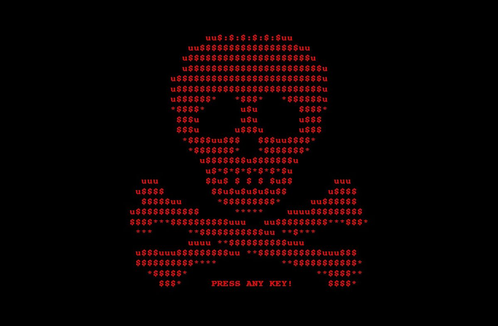

Profissionais que utilizam técnicas de invasão para proteger sistemas e dados contra ameaças reais. Uma das carreiras mais requisitadas da tecnologia.
> scanning vulnerabilities...
> access granted
> digite "help" e pressione Enter
>>
Origem do termo hacker nos laboratórios do MIT. "Hack" era sinônimo de solução criativa e engenhosa.
Expansão da internet e surgimento de ataques em larga escala. Empresas começam a contratar especialistas em segurança.
Surgem as primeiras certificações formais — CEH, OSCP — e o hacking ético ganha reconhecimento corporativo global.
Hacker ético como profissão essencial na segurança digital, com demanda crescente e déficit global de profissionais.
Cada especialidade exige habilidades distintas — desde ataque até investigação forense.

Simula ataques reais para encontrar falhas antes que invasores o façam.
Emula ameaças persistentes para testar toda a postura defensiva da organização.
Defesa, monitoramento e resposta a incidentes em tempo real.
Analisa evidências digitais após incidentes para identificar causas e responsáveis.
As competências mais valorizadas no mercado de segurança ofensiva e defensiva.
Plataformas confiáveis para começar na área sem custo.
Curso completo de Cybersecurity com certificado reconhecido pelo mercado nacional.
Acessar →Introduction to Cybersecurity com certificação Cisco reconhecida mundialmente.
Acessar →Programa nacional de capacitação em cibersegurança com trilhas estruturadas.
Acessar →Responda ao quiz rápido e descubra o quanto você já sabe sobre segurança da informação.
Pergunta 1 de 5